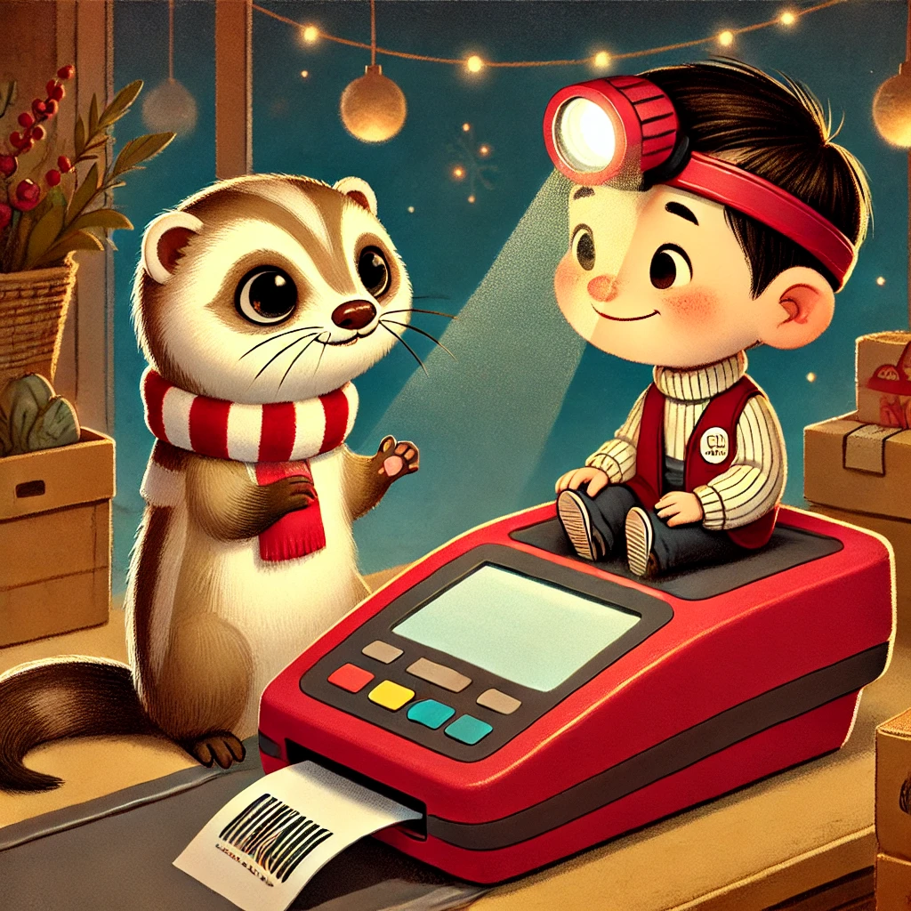

Es war einmal ein Wiesel namens Winnie, das oben auf dem Knabbereienregal eines Supermarkts in Leknes auf den Lofoten wohnte. Eines Tages, Winnie hatte gerade in einer Pfütze am Eingang des Supermarkets gebadet, hörte Winnie ein leises Weinen. Es schien aus der Richtung der Kassen zu kommen.
Neugierig und ein wenig besorgt hobbelte Winnie Richtung Kasse 1. Die Kasse war nicht besetzt, dennoch könnte Winnie ein schwaches rotes Licht aus der Glasscheibe, die die Barcodes scannt schimmern sehen. Mit etwas Anstrengung erklomm sie das Kassenband und tapste vorsichtig Richtung Scheibe. Sie starrte hinunter in einen winzigen Raum, der einem kleinen Büro glich. In diesem Büro saß ein kleiner Kerl mit einem gelben Helm. An der Stirnseite des Helms war eine rote Lampe befestigt. Das Kerlchen schluchzte und jedes Mal, wenn er sich schüttelte entwich ihm ein leises "Biep".
Winnie klopfte an die Scheibe und winkte. Erstaunt schaute der kleine Mann hinauf und kletterte vorsichtig Richtung einer Klappe, die ihn zu Winnie hinauf brachte. "Warum weinst du?" fragte Winnie. "Weil ich so einsam bin." antwortete das Kerlchen.
"Ich hab keinen Namen", schluchzte er und ein leises "Biep" und ein roter Lichtblitz folgten. "Für mich bist du Biep", lächelte Winnie. "Biep", machte Herr Biep.

"Willst du mit mir in der Pfütze baden", fragte Winnie. Biep nickte.